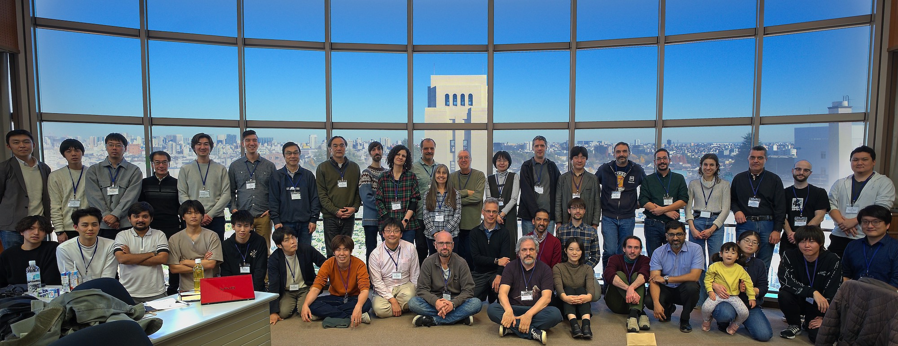

The Research Meeting and School on Distributed Computing by Mobile Robots (MAC) will take place October 12-13, 2025, in Kathmandu, Nepal co-located with SSS 2025.
Distributed robot computing is the study of complexity and computability in systems where the computational entities themselves are capable of movement within the spatial universe they inhabit. The field has applications in areas as diverse as autonomous robots moving in a terrain, software agents moving in a network, autonomous intelligent vehicles, wireless mobile ad-hoc networks, and networks of mobile sensors.
The goal of the research meeting, the 10th in the MAC series, is to bring together researchers working in this areas in order to exchange problems, ideas, techniques, and results. The objective is to create a clearer picture of the state of the art in the field, to identify outstanding open problems and research directions, and to foster collaborative investigation of selected problems.
The event includes participation by graduate students and post-doctoral fellows.
There will be invited talks on current research topics and presentations of open problems. The discussion and study of these open problems constitutes an integral part of the event.
 A successful MAC 2023, the 9th in the MAC series, Tokyo, Japan (photo and processing by Sébastien Tixeuil)